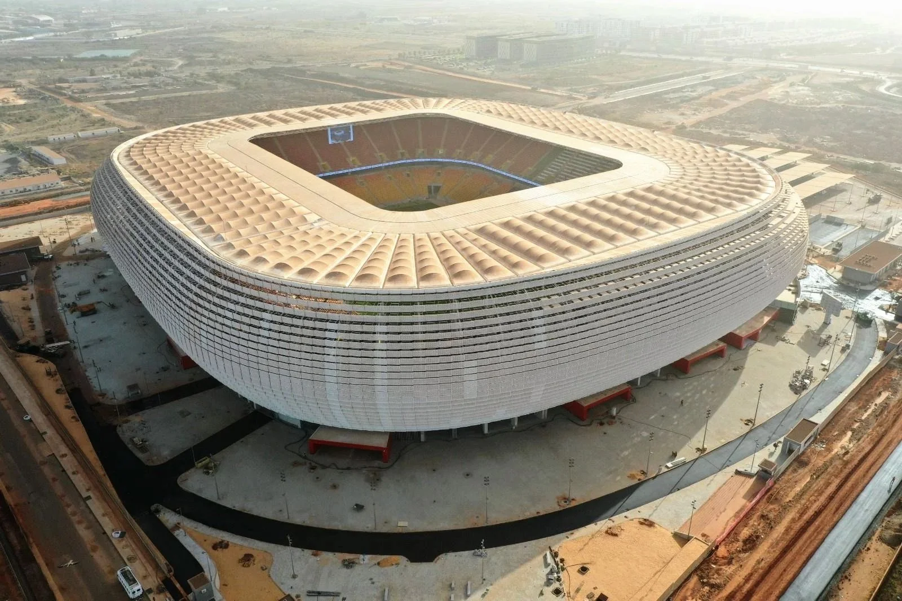

Grand Stade de Tanger
- Ville : Tanger
- Capacité : 75 000
- Année d'ouverture : 2011

Complexe Sportif Prince Moulay Abdellah
- Ville : Rabat
- Capacité : 69 500
- Année d'ouverture : 1983

Grand Stade de Marrakech
- Ville : Marrakech
- Capacité : 41 245
- Année d'ouverture : 2011
Grand Stade d'Agadir
- Ville : Agadir
- Capacité : 41 144
- Année d'ouverture : 2013

Complexe Sportif Mohammed V
- Ville : Casablanca
- Capacité : 45 000
- Année d'ouverture : 1955
Complexe Sportif de Fès
- Ville : Fès
- Capacité : 35 468
- Année d'ouverture : 2007
Complexe Sportif Prince Héritier Moulay El Hassan
- Ville : Rabat
- Capacité : 22 000
- Année d'ouverture : 2003

Stade Olympique Annexe Prince Moulay Abdellah
- Ville : Rabat
- Capacité : 21 000
- Année d'ouverture : 1983
Stade Al Barid
- Ville : Rabat
- Capacité : 18 000
- Année d'ouverture : 2010